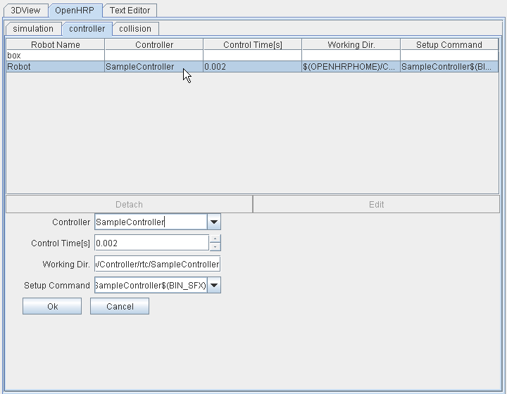

Overview
The controller bridge is the process which manage input/outputs(I/O) between the simulating model
and each OpenRTM component.The I/O port is set and the connection between ports is specified
by the start option or using the configuration file.
Manual
Start-Options
The start-options are as follows;
| Start option (format) |
Explanation |
| --module <module file>[:<Initialization function>] |
Specifies the module file. |
| --server-name <controller> |
The name of the factory server that generates the component to the CORBA name server |
| --in-port <port>[:<joint id>]:<property> |
Specifies the input port name and its property |
| --out-port <port>[:<joint id>]:<property> |
Specifies the output port name and its property |
| --connection <port>[:<controller instance>]:<port> |
Specifies the connection between ports |
| -h / --help |
Display start-options list |
| --config-file <configuration file> |
Specifies the file that configures start-options |
| --robot-name <targeted model> |
Specifies the targeted model. |
| --name-server <name server host>:<port> |
Specifies OpenHRP's CORBA name server. |
Table 1: Start Options List
--module <module file>[:<Initialization function>]
Used to specify the model file generated by compiling the component, and the initialization
function name if necessary.
Default value of initialization function name is "module file name"+"Init".
Module files (files having ".so" extensions in UNIX environments and ".dll" extensions in
Windows environment) are loaded automatically omitting their extension.
Ex: --module SamplePD
This will load "SamplePD.dll" in Windows, or "SamplePD.so" in UNIX, and call the initialization
function "SamplePDInit".
--server-name <controller>
This option used to specify the name of the factory server that generates the CORBA
component of the bridge. To view controller settings, go to "OpenHRP" → "controller" tab
in GrxUI and select the particular controller from "Controller" drop-down list.

Fig.1: GrxUI controller tab
--in-port <port>[:<joint id>]:<property>
This option allows you to sepecify input port name and its property name. If
the joint id name is specified, only the value of a specific part will be input.
Here the joint id name means joint node name of the VRML Model.
Ex: --in-port r_arm_elbow:RARM_ELBOW:JOINT_VALUE
Value of the JOINT_VALUE property, of RARM_ELBOW joint is input.
--out-port <port>[:<joint id>]:<property>
This option allows you to sepecify output port name and its property name. If
the joint id name is specified, only the value of a specific part will be output.
Here the joint id name means joint node name of the VRML Model.
If the output contains image data, sensorId value of VisionSensor must be specified,
instead of the joint id name.
Ex: --out-port image:0:COLOR_IMAGE
Outputs the color image taken by VisionSensor, which is sensorId is 0.
--connection <port>[:<controller instance>]:<port>
This is used to specify connection between I/O ports. Specify the port name of targeted model
at left, and the port name of controller at right, delimited by colon.
The controller instance name can be omitted.
Ex: --connection angle:JoystickController0:angle
Connects the port(angle) of the targeted model with the port(angle) of the JoystickController0
instance.
-h / --help
This option displays a list of start-options that can be used, and their explanations,in English.
You may use either -h or --help.
--config-file <configuration file>
Used to specify the file that configures start-options. You may use this for unifying start-options
and complex I/O port configurations. Please refer the configuration file "bridge.conf" in the sample
controllers' folder. (NOTE)
Format of OpenHRP/Controller/rtc/SamplePD/bridge.conf is as follows;
server-name = SamplePDController
in-port = torque:JOINT_TORQUE
out-port = angle:JOINT_VALUE
connection = angle:angle
connection = torque:torque
module = SamplePD
The content of the text file is basically collection of start-options having removed hyphen(-)
and specified string values for each using '='. The space and tab letter that surrounds '=' from
left and right, will be neglected. Considering the operation on UNIX environments, it is much
safer to use LF as line-feed code even on Windows environments; so then it would be compatible
for both platforms.
NOTE:
This file is not available on versions prior to Ver3.0.0. And a part of files' format was
changed with Ver3.0.2. So we recommand you to upgrade your OpenHRP version to the latest.
--robot-name <targeted model>
Specifies the name of the targeted model(equiped with I/O ports) that has to communicate with.
The default value is "VirtualRobot". Considering the generation of multiple instances,
its name is appended with an index number starting from 0. Therefore "TargetedModelName0" will
be the first instance to register in the nameserver.
--name-server <name server host>
Specifies the CORBA name server of OpenHRP.
Default value is "localhost:2809".
Ex: --name-server 192.168.1.10:2809
Specifies the CORBA name server of OpenHRP that has been connected and waiting through port 2809
of ip address 192.168.1.10 .
Property
Properties that can be specified in the above start-options are as follows;
| Property |
In Port / Out Port |
Joint datatype |
Explanation |
| JOINT_VALUE |
yes/yes |
double |
Joint-angle or Joint-location |
| JOINT_VELOCITY |
yes/yes |
double |
Differentiation of JOINT_VALUE |
| JOINT_ACCELERATION |
yes/yes |
double |
2nd differentiation of JOINT_VALUE |
| JOINT_TORQUE |
yes/yes |
double |
Joint-torque |
| EXTERNAL_FORCE |
yes(∗1) /no |
double*6 |
Force, Torque |
| ABS_TRANSFORM |
yes(∗1) /no |
double*12 |
Joint-location(1st 3 elements are positions vectors, 9 elements are for posture) |
| FORCE_SENSOR |
no/yes |
double*6 |
Force, Torque |
| RATE_GYRO_SENSOR |
no/yes |
double*3 |
Gyro-Sensor (3D vector) |
| ACCELERATION_SENSOR |
no/yes |
double*3 |
Acceleration Sensor (3D vector) |
| COLOR_IMAGE(∗3) |
no/yes(∗2) |
long*ImageSize |
color image |
| GRAYSCALE_IMAGE(∗3) |
no/yes(∗2) |
octet*ImageSize |
gray-scale image |
| DEPTH_IMAGE(∗3) |
no/yes(∗2) |
float*ImageSize |
depth image |
Table 2: Property List
∗1: Becomes enable when [:Joint-ID] is specified in in-port option
∗2: Becomes enable when [:sensorId] is specified in out-port option
∗3: Supports with Ver3.0.3 or later